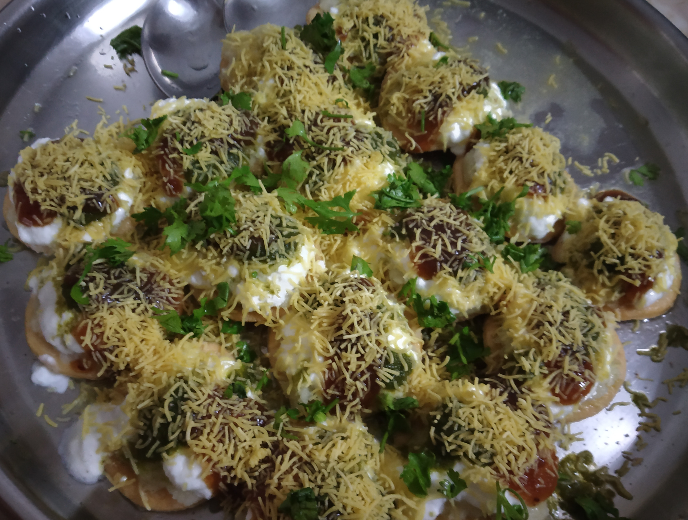

SEV PURI
In frame is Sev puri is an Indian cuisine snack and a type of chaat.
It is a speciality that originates from Pune, Maharashtra, India. In Pune and Mumbai, sev puri is strongly associated with street food.
INGREDIENTS :
Papdi,nilon sev
Chopped onion,cilantro
green chutney and turmeric sweet chutney
boiled potato,Garlic chutney
Chat masala,black salt
STEPS ONE CAN FOLLOW(if needed) :
First place the papdi on the plate and then add boiled potato on the papdi
Then add chat masala and then add black salt on top
After that add the chutneys on top and then some chopped onion and then add nilon sev
Then at the end garnish some cilantro on top